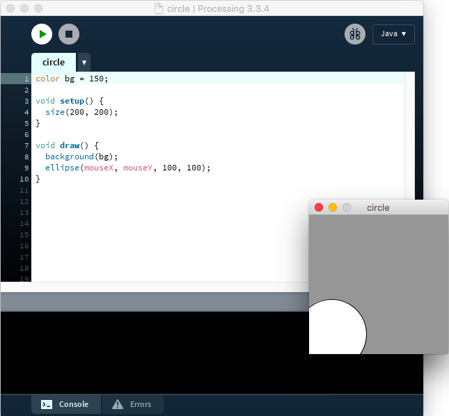
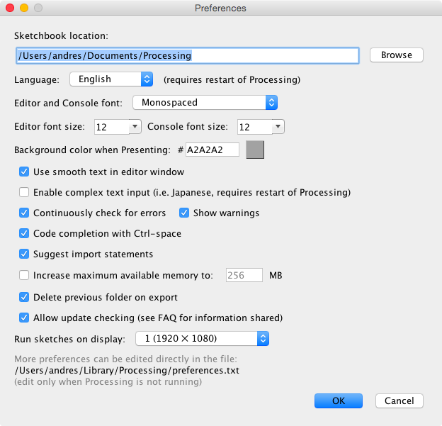
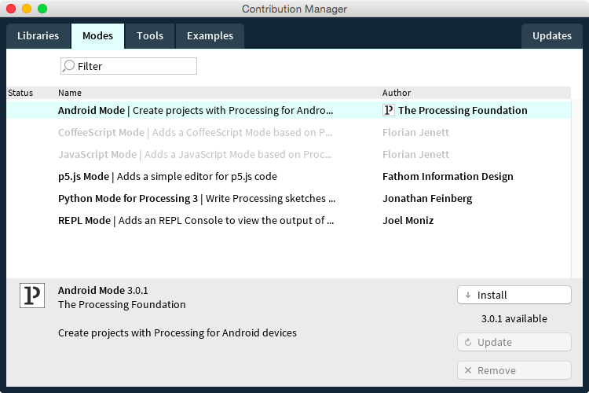
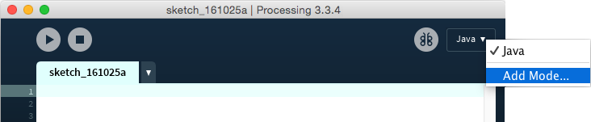
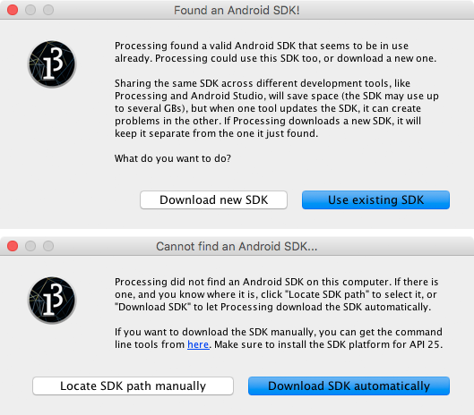
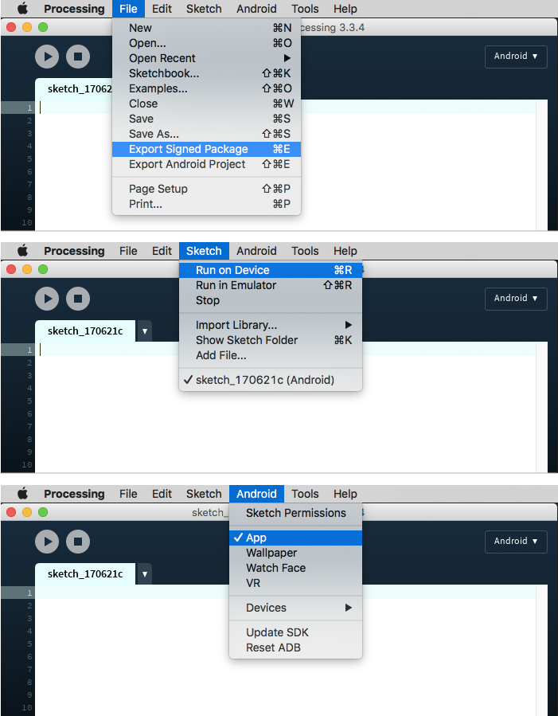
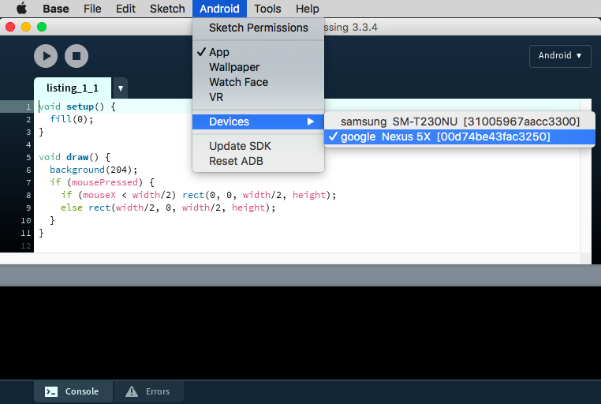
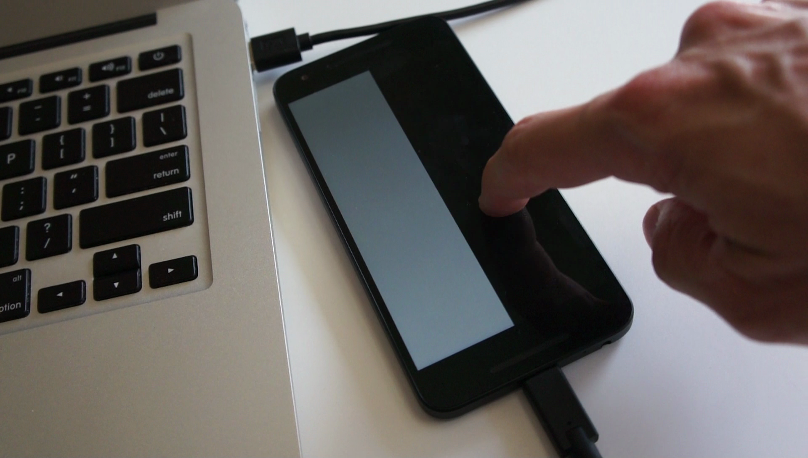
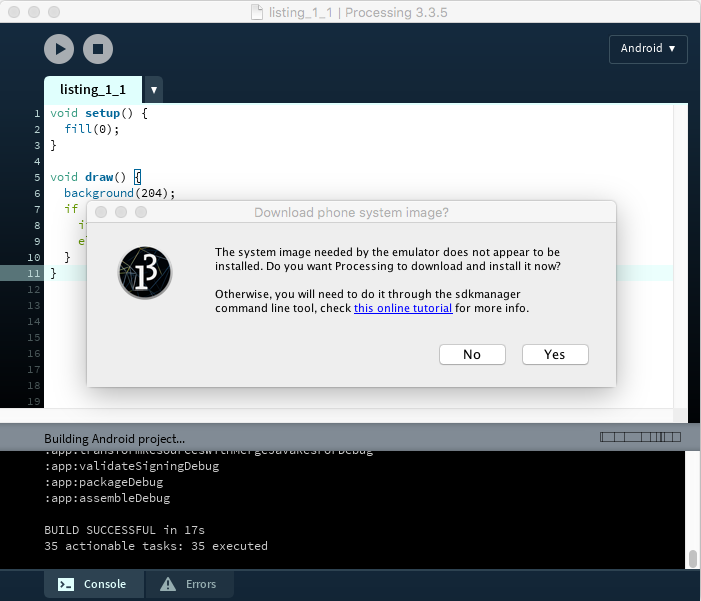
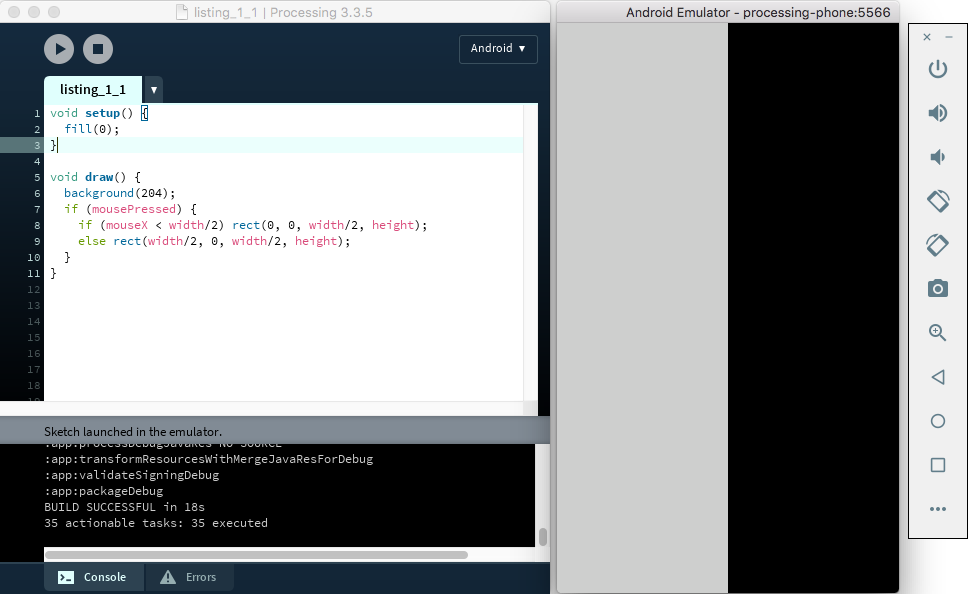

In this chapter, we will introduce the Processing software and Android mode, the community project behind them, and how we can begin using the mode to create apps for Android devices.
The Processing project is a community initiative focused on sharing knowledge, fostering education, and promoting diversity in code-based art and design. The Processing software is a central part of this initiative, now guided by the Processing Foundation. The Processing software was created in 2001 by Casey Reas and Ben Fry at the MIT Media Lab as a teaching and production tool in computational arts and design, and has been evolving continuously since then. It is available for download at https://processing.org/, and its source code is released under free software licenses (GPL and LGPL). From now on, I will simply refer to Processing when talking about the Processing software.
Processing consists of two complementary pieces: the language and the development environment. Together, they form a “software sketchbook” designed to allow the expression of visual ideas quickly with code, while also providing enough room to let those ideas develop into full-blown projects. Processing has been used to create many beautiful and inspiring works in generative art, data visualization, and interactive installations, some of which are included in a curated list on the Processing site.
The Processing language comprises a set of functions for handling screen drawing, data input/output, and user interaction. A small team of volunteers behind the Processing project has carefully constructed this set of functions, technically called an Application Program Interface or API, to simplify the development of graphical and interactive applications by means of a simple and consistent naming convention, unambiguous behavior, and a well-defined scope. While originally implemented in Java, the Processing API is currently available in many programming languages, including Python, JavaScript, and R. However, it is the Java implementation of this API, together with some simplifications to the Java language, what defines the Processing language. Despite this distinction, throughout the book I will use the terms Processing language and API interchangeably, since in the context of Android, we will essentially be using the Java implementation of the Processing API.
In active development since 2001, the Processing language now encompasses around 300 items between not only functions, but also classes and constants. One defining feature of this language is that it offers the possibility to create a program capable of displaying interactive graphics using very little code. As I mentioned, it also includes a number of simplifications with respect to the Java language, with the purpose of making it easier to teach to people who are not familiar with computer code. The following program exemplifies these features of the Processing language:
color bg = 150;
void setup() {
size(200, 200);
}
void draw() {
background(bg);
ellipse(mouseX, mouseY, 100, 100);
}
The output of this program is a window of 200 by 200 pixels that contains a white circle that follows the movement of the mouse; the window has a gray background. The functions setup() and draw() are present in almost any Processing program and drive its “drawing loop.” All the initialization of the program should take place in setup(), which is executed just once when the program starts up. The draw() function, which contains all the drawing instructions, is then called continuously several times per second (by default, 60 times) so that the graphical output of the program can be animated through time.
However, if you are familiar with Java, you have probably noticed that this code is not a valid Java program. For example, there is no explicit definition of a main class encapsulating all the code, nor additional instructions required in Java to initialize the “windowing toolkit” that handles the display and the user input. This program, as it is, needs to be run inside the Processing development environment, which applies a “preprocessing” step to the Processing code in order to convert it into a valid Java program. However, this transformation occurs behind the scenes, and the Processing user does not need to worry about it at all.
The Processing development environment (PDE) is the application that provides us with a simplified code editor to write, debug, and run Processing programs, called sketches (Figure 1-1). The PDE also incorporates an uncluttered user interface to handle all the sketches created with it and to add libraries and other external components that extend the core functionality of the PDE, such as p5.js, Python, or Android modes.

Figure 1-1. The Processing development environment showing a running sketch in Java mode
The simplicity and ease of use of the PDE and the Processing language are the key elements of this “code sketchbook.” A stumbling block for many people wanting to start working with code is the complexity of a modern development environment, like Eclipse or IntelliJ, in terms of a lengthy installation and an overwhelming user interface. In contrast, the PDE addresses these issues by providing an easy install process and a minimal interface, while the simple structure of a Processing sketch enables users to obtain visual feedback rapidly. Processing’s aim is to support an iterative development process analogous to sketching with pen and paper, where one can start with a simple idea and refine it through successive sketches.
We can download the latest version of Processing from the main website. As pointed out in the previous paragraph, installation is fairly straightforward, only requiring the unpacking of the .zip (on Windows and Mac) or .tgz (on Linux) package that contains the PDE and all other core files. We should be able to then run the PDE without any additional steps from any location inside the Home or Applications folders.
The PDE organizes user sketches in a sketchbook folder. Each sketch is stored in a subfolder inside the sketchbook, which in turn contains one or more source-code files with the .pde extension. By default, Processing creates the sketchbook folder inside the Documents folder located in the user’s account (for instance, /Users/andres/Documents/Processing on Mac), but this location can be changed by selecting the desired sketchbook folder in the Preferences window, available under the Processing menu on Mac and File menu on Windows and Linux (Figure 1-2). Notice the sketchbook location at the top.

Figure 1-2. The Preferences window on Mac
As I mentioned at the beginning, the Processing project is not only the PDE or the language, but also, and very importantly, the community built around the use of the software and the goals of sharing, teaching, and inclusiveness. Thanks to Processing’s open nature and modular architecture, many people have contributed improvements and extensions to the “core” software. These contributions fall within one of the following four categories:
The extension of Processing through contributed libraries, modes, tools, and examples has enabled its growth into application domains that were not part of the original software, such as mobile apps, computer vision, and physical computing, while keeping the core functionality simple and accessible for new programmers.
By default, Processing includes one default mode, Java, where we can write and run sketches on Windows, Mac, and Linux computers using the Java implementation of the Processing language. Processing also bundles several “core” libraries, some of which are OpenGL (for drawing hardware-accelerated 2D and 3D scenes), pdf (to export graphics as pdf files), and data (which allows the handling of data files in formats such as CSV and JSON).
To install additional contributions, we rely oncan use the Contribution Manager (CM), which makes the process seamless. A screenshot of the CM is shown in Figure 1-3. The CM has five tabs, the first four for each type of contribution—libraries, modes, tools, and examples—and the fifth for updates. All the contributions that are registered by their authors in a central repository are accessible through the CM and can also be updated through the CM when new versions become available.

Figure 1-3. The Contribution Manager in Processing, showing the Modes tab
Processing for Android, not unlike the Processing software itself, is several things. Primarily, it is a community effort that started in 2009 with the purpose of supporting the development of Android apps using Processing, as well as translating some of the concepts of the project to the context of mobile apps: iterative sketching, simplicity, and accessibility.
From a software point of view, Processing for Android is composed of the processing-android library and the custom PDE programming mode itself. The library is the package that contains all the functions of the Processing API, but reimplemented for the Android platform. Android mode provides a customized version of the PDE that allows us to write Processing code and run it on an Android device or in the emulator. Android mode includes the processing-android library, which we need for our Processing code to run without errors. However, these distinctions are not critical at this point, since Processing will let us install and use Android mode without our having to worry about the processing-android library. This library would become more important for those among you who may be planning to use Processing for Android in more advanced applications.
Once we have installed Processing on our computer, we should be able to open the PDE by running the Processing application, and then we can install the most recent release of Android mode through the CM. The mode also requires the Android Software Development Kit (SDK) in order to work. The Android SDK is the set of libraries, tools, documentation, and other supporting files provided by Google to develop and debug Android apps. So, to install Android mode and, if needed, the SDK, follow these steps:

Figure 1-4. Opening the Contribution Manager to add a new mode
If a valid SDK is detected on the computer, Processing will ask if we want to use it or download a new one (Figure 1-5). Because the SDK is very large (up to several GBs), it can be a good idea to use the one that is already installed to save disk space. However, if that SDK is also used by another development tool, such as Android Studio, it may get updated outside Processing, which may lead to incompatibilities with the mode.

Figure 1-5. Choosing between using an existing SDK or downloading a new one automatically (top), and between locating an SDK manually or downloading one automatically (bottom)
If no valid Android SDK is detected, Processing will ask to either manually locate an SDK or automatically download one (Figure 1-5).
The editor in Android mode is very similar to that of Java mode. The toolbar contains the Play and Stop buttons to launch a sketch and to stop its execution (on the device or in the emulator). Code autocompletion in the editor is available as well. However, version 4.0 of Android mode does not offer an integrated debugger. The main menu contains a number of Android-specific options as well (Figure 1-6). The File menu has options to export the current sketch as a package ready for upload to the Google Play Store or as a project that can be opened with Android Studio. The Sketch menu contains separate options to run the sketch on a device or in the emulator, as well as a separate Android menu containing several options, among them the type of output to target with the sketch—regular app, wallpaper, watch face, or VR app—and a list of Android devices currently connected to the computer. All of these options will be covered in subsequent chapters.

Figure 1-6. Android-specific options in the interface of Android mode
Once we have written some sketch code with the PDE, we can run it on an Android phone, tablet, or watch. We need to first make sure that “USB Debugging” is turned on for our device. The process to do so varies by device and by which version of the Android OS is installed on it. In most cases, this setting is located in the Developer Options, under System Setting. On Android 4.2 and higher, the Developer Options are hidden by default, but we can enable them by following these instructions:
Let’s use the code in Listing 1-1 as our first Processing for Android sketch! It is not important to understand each line of code in it, as we will go over the Processing API in detail in the following chapters. This code simply draws a black square on the half of the screen that receives a touch press.
Listing 1-1. Our First Processing for Android Sketch
void setup() {
fill(0);
}
void draw() {
background(204);
if (mousePressed) {
if (mouseX < width/2) rect(0, 0, width/2, height);
else rect(width/2, 0, width/2, height);
}
}
It is possible to have multiple devices connected simultaneously to the computer, but only one can be selected in the Devices menu as the “active” device, which is where our sketch will be installed and run. Figure 1-7 shows our first sketch already loaded in the PDE, along with the selected device to run it on.

Figure 1-7. Selecting the device to run the sketch on
After we have picked the active device, we can hit the Run button or select “Run on Device” under the Sketch menu. We should see some messages scrolling down the PDE’s console while Processing compiles the sketch, packages it as a debug app, and installs it on the device. One important detail is that the computer needs to be connected to the Internet the first time a sketch is run. Processing uses a tool called Gradle to build the app from the sketch’s source code. Android mode comes with a “Gradle wrapper,” so we don’t need to install Gradle manually, but the wrapper will automatically download the rest of the Gradle tool the first time it is invoked. We can be offline when running sketches after the first time. If everything goes well, the sketch should launch and show up on the screen of the device, as depicted in Figure 1-8.

Figure 1-8. Selecting the device to run the sketch on
If we do not have a device on which to run our sketch, we can use the emulator. The emulator is a program that creates a software replica of a physical device. This replica is called an Android Virtual Device (AVD), and even though it is generally slower than a real device, it can be useful for testing a sketch on hardware we don’t currently have.
The first time we run a sketch in the emulator, Processing will download the system image containing all the information needed to create the AVD on our computer (Figure 1-9). However, it will initially ask if we want to use the “ARM” or the “x86” images. The reason for this is that Android devices use ARM CPUs, while desktop computers have x86 processors. When working with an AVD with an ARM image, the emulator will convert ARM instructions into x86 instructions one by one, which is slow. But if we use the x86 image, the CPU in our computer will be able to simulate the AVD’s CPU much more directly and quickly. One drawback of using x86 images is that we must install additional software on Mac or Windows called HAXM. Since Processing downloaded HAXM together with the SDK, it will install it for us in case we decide to use x86 images.

Figure 1-9. System image download dialog in Android mode
We also have to keep in mind that HAXM is only compatible with Intel processors, so the emulator won’t work with x86 images if our computer has an AMD CPU. Linux has its own AVD acceleration system and does not require HAXM, so we can use x86 images on a Linux computer with an AMD CPU. We would need to perform some extra configuration steps though, which are described here.
After finishing the download, which can take several minutes, depending on the Internet connection (the system images for the emulator are around 900 MB in size), Processing will boot up the emulator and then launch the sketch in it. Once our Listing 1-1 is running in the emulator, it should look like Figure 1-10.

Figure 1-10. System image download dialog in Android mode
In this first chapter, we have learned what the Processing project and software are, and how we can use Processing to create apps via the Android programming mode. As we saw, some of the main features of the Processing software are its minimal interface and the simple structure of a code project, which is called a sketch. These features allow us to start writing and testing our own sketches, either on a device or in the emulator, very quickly.